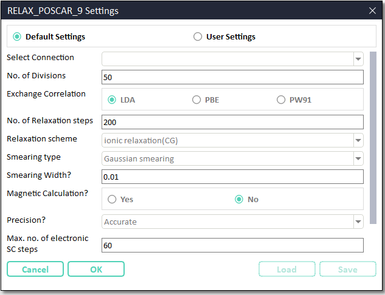

Guide to CINEMAS-bandstructure module¶
Start from scratch.
Bandstructure from scratch using a structure file¶
Initiate Bandstructure module:
Bandstructure module can be initiated from CASCADE toolbar by clicking XXX icon.
{kind=link}
All the automatic modules within CINEMAS always look for at least an active connection established to a remote server. However, workflows and input files therein can be created automatically, but to be submitted manually.
Fig. 29 Module looking for an active connection to a remote server.¶
{kind=link}
Load the structure:
Browse a single or multiple structure file(s) from disk. In the current version of CINEMAS supported structure file formats are \(\texttt{POSCAR/*.vasp/*.cif/*.in/*.xsf}\).
Settings for input-files:
Fig. 30 Snapshot of window showing CINEMAS default settings to prepare rest of the input files.¶
In Fig. 30, the first field is a list of established(if any) connections.
In ‘default’ mode workflow is submitted automatically to a connection marked as default in connection workspace.
In default mode, all the setting fields will be disabled and show parameters in ‘read-only’ mode.
Setting-mode has to be changed to user mode to make customized settings.
In the user mode of settings, remote server can be selected from a list of established connections as show in the figure below.
As well as all the setting fields can be set to desired parameters.
Additionally Save and Load buttons are enabled, and can be used to save user-settings as a template or to load a saved one.
{kind=link}
{kind=link}
Automatic creation of high symmetry k-path in Brillouin Zone
For bandstructure calculations CINEMAS module automatically chooses k-path in Brillouin zone and writes to a \(\texttt{KPOINTS}\) (for VASP) file.
This is performed by utilizing HighSymmKpath class of pymatgen.symmetry.bandstructure module.
Automatic creation of workflows:
Once settings-mode is defined/selected, workflows are created automatically.
CINEMAS Bandstructure module includes a relaxation and a dependent band-structure calculation.
By default relaxation workflow is shown collapsed, while band one is expanded(Fig. 32).
However can be expanded at user’s choice(Fig. 33).
A single band module can have a single structure(Fig. 32, Fig. 33) or multiple(Fig. 34, Fig. 35) structures.
{kind=link}
{kind=link}
{kind=link}
{kind=link}
Post-process bandstructure:
Once over, a quick-view of bandstructure will be available from Snapshot workspace.
The button
 redirects to Analysis workspace for a user-customized bandstructure plot and to prepare publication-quality figures.
redirects to Analysis workspace for a user-customized bandstructure plot and to prepare publication-quality figures.
You can find a tutorial below explaining the functioning of Bandstructure module in CINEMAS.
{kind=link}
{kind=link}
{kind=link}
Bandstructure from a blank template¶
Alternatively, as shown in Fig. 28 option of empty template can be selected.
A blank template of bandstructure module is created(Fig. 39).
Other workflows can be imported inside these templates, by:
Copy/Paste method.
Drag and drop other workflows.
Select a empty workflow of blank template, and import a calculation from disk into it.
{kind=link}